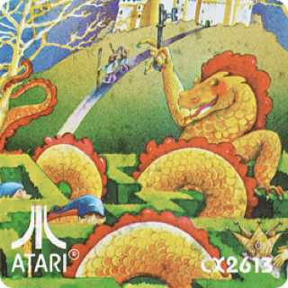
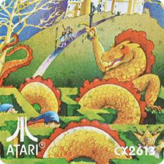

It’s a COMPUTER, it’s a COLOR TV, it’s an ARCADE.
We put it all together just for you!
When you're ready for serious business, power-on to the Master Keyboard. Our
state-of-the-art Microprocessor and the RAM packed (64K) internal components (expandable to 128K) turn
this
system into one of the most powerful computers on the market.
When the business gets tiresome and you want some real excitement, choose one of our 12 action-packed
games ... they'll blow you away. And don't feel sorry if you have a large library of Atari VCS, or
ColecoVision games, because you can enjoy them through our expansion modules.
This revolutionary system doesn't just claim to duplicate the arcade experience... it surpasses it!
And
it's portable too, A/C or D/C. Plus 3 dimensional graphics, zoom and other special visual effects. The
unique built-in sound system simulates echo and reverberation for authentic reproduction of explosions,
crowds, music, etc. And you can hear it all without disturbing others. As a Color TV, it's better than
most,
with 2 independent systems to guarantee the sharpest resolution for the Computer/Game Systems and TV.


Entertainment Surpassing
the "Real Arcade Game" Experience
The only video game system that is completely self-contained:
- Built-in 9" diagonal high resolution color monitor.
- Advanced display technology with detailed graphics and special effects found only in coin-op arcade
games.
- Greater brilliance & higher resolution than conventional television systems.
Completeluy portable: Operates on AC/DC current with self-contained rechargeable battery power pack &
optional cigarette lighter adaptor cord.
ADVANCE FEATURES:
An arcade
Two 16-position arcade style joysticks and dual stereo headphone jacks,

A color tv
A full-fledged 9" color television, complete with 84 channel support

A computer
Monitor can be directly connected to computer peripherals.

Latest releases

 



Contact
We put it all together just for you!
When you're ready for serious business, power-on to the Master Keyboard. Our
state-of-the-art Microprocessor and the RAM packed (64K) internal components (expandable to 128K) turn
this
system into one of the most powerful computers on the market.
When the business gets tiresome and you want some real excitement, choose one of our 12 action-packed
games ... they'll blow you away. And don't feel sorry if you have a large library of Atari VCS, or
ColecoVision games, because you can enjoy them through our expansion modules.
This revolutionary system doesn't just claim to duplicate the arcade experience... it surpasses it!
And
it's portable too, A/C or D/C. Plus 3 dimensional graphics, zoom and other special visual effects. The
unique built-in sound system simulates echo and reverberation for authentic reproduction of explosions,
crowds, music, etc. And you can hear it all without disturbing others. As a Color TV, it's better than
most,
with 2 independent systems to guarantee the sharpest resolution for the Computer/Game Systems and TV.
Entertainment Surpassing the "Real Arcade Game" Experience
The only video game system that is completely self-contained:
- Built-in 9" diagonal high resolution color monitor.
- Advanced display technology with detailed graphics and special effects found only in coin-op arcade games.
- Greater brilliance & higher resolution than conventional television systems.
Completeluy portable: Operates on AC/DC current with self-contained rechargeable battery power pack & optional cigarette lighter adaptor cord.
An arcade
Two 16-position arcade style joysticks and dual stereo headphone jacks,
A color tv
A full-fledged 9" color television, complete with 84 channel support
A computer
Monitor can be directly connected to computer peripherals.
Latest releases